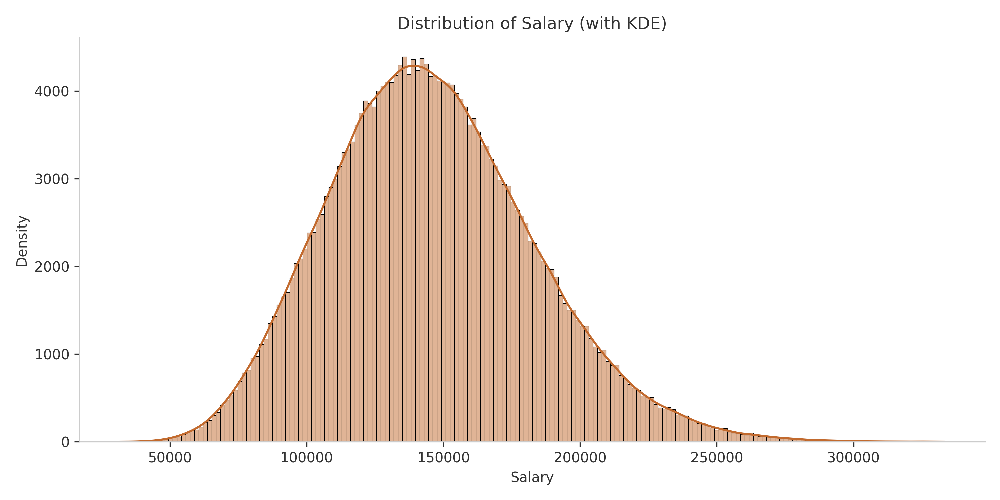

A comprehensive overview investigating the interplay between salaries, education levels, experience, and different job features within the labor market.

The salary distribution exhibits a right-skewed pattern, heavily concentrated in entry-level to mid-range brackets. The presence of a "long tail" at higher income levels reflects the scarcity of senior or C-level positions in the labor market.
Education: Advanced educational degrees (Master's or PhD) raise the median salary and considerably widen the variance, confirming they are often tied to highly specialized or strategic management roles.
Company Size: Enterprise and Large companies consistently offer higher compensation bands and greater salary ceilings compared to Startups and Small businesses.
By crossing Education Level with Company Size, we observe nuanced salary boundaries. For instance, obtaining a higher degree (Master/PhD) effectively multiplies earning potential significantly more within Enterprise environments than in Startups.
Job Titles: Specialized or technical roles typically command higher median salaries, indicating market demand for niche technical skill sets over generalist positions.
Industries: High-margin sectors like Finance and Technology strongly dominate the top-paying tiers, reflecting their reliance on data-driven or tech-savvy professionals.
This dual-axis chart maps the frequency underlying median salaries. It highlights areas where extremely high statistical limits may be derived from a tiny subsample of employees (Class Imbalance). Being aware of these rare high-leverage outliers prevents ML models from becoming overconfident.
Remote Work: Fully remote and hybrid roles frequently capture competitive salaries matching or exceeding traditional on-site jobs, suggesting strong remote compensation parity.
Location: Developed markets (e.g., USA, UK, Germany) showcase a significantly higher baseline for compensation due to elevated living costs and robust talent ecosystems.
The scatter plot illustrates a strong, positive linear relationship between years of experience and salary. As experience increases, compensation consistently trends upward, reaffirming that seniority and time in the industry are among the most reliable predictors of higher earning potential.
Numerical: Years of experience maintain the strongest linear correlation with overall salary, whereas skills or certifications act as competitive catalysts but not primary drivers.
Categorical: We track Cramér's V to identify redundant text variables. High correlation (>0.8) between two categorical columns (e.g., Job Title and Industry) may require dimensionality reduction to avoid multicollinearity in predictive models.
Based on the comprehensive Exploratory Data Analysis (EDA) and Statistical Testing (Pearson, Cramér's V) performed, we conclude that the following core factors shape compensation in the labor market:
Years of Experience stands as the most robust baseline metric. Compensation scales linearly and consistently with active field experience, vastly overshadowing surface-level factors like the sheer count of skills or certifications.Advanced Degree (Master's/PhD) combined with working at an Enterprise-scale Company creates a massive leverage effect. These factors do not just bump the baseline salary - they dramatically stretch the salary ceiling to dimensions exclusively reserved for senior management and highly specialized domains.Remote/Hybrid professionals are capturing compensation packages strictly equal to, if not exceeding, traditional On-site workers. Additionally, securing roles stationed across developed Western markets (USA, Canada, EU) serves as a rigid guarantee for top-percentile salary tiers.Transitioning into the Machine Learning prediction phase, models must be configured to prioritize primary pillars (Experience, Education, Company Size). Concurrently, aggressive Feature Engineering is required to consolidate highly-fragmented "Job Titles", neutralizing Class Imbalance risks that would otherwise induce severe overfitting on hyper-specific outlier records.